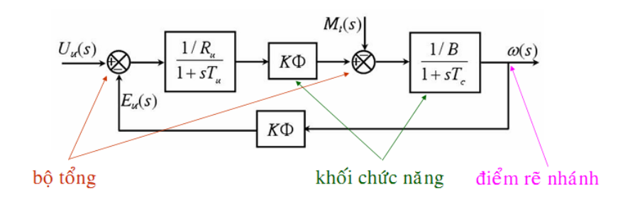
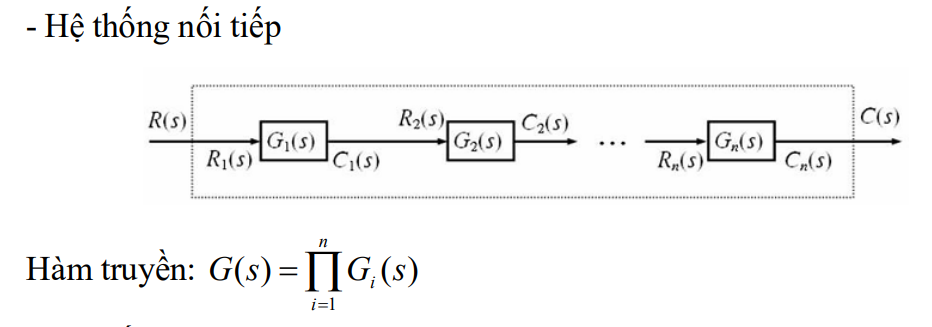
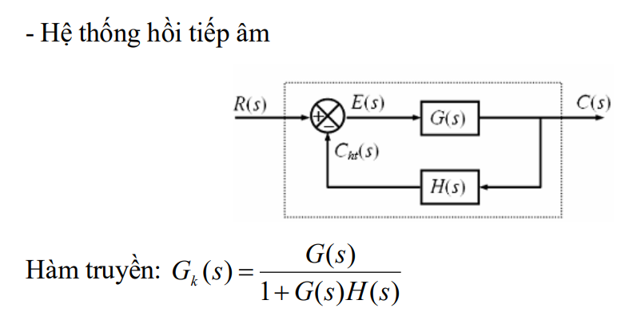
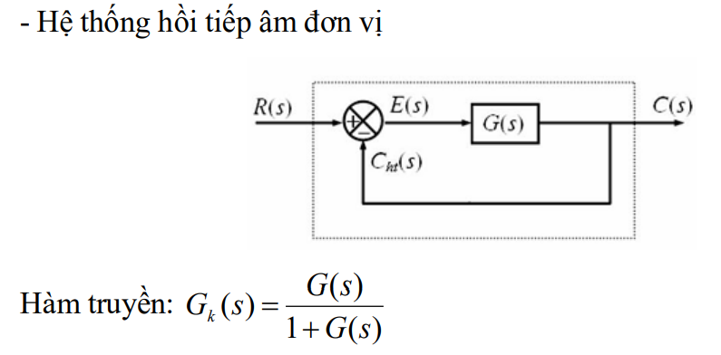
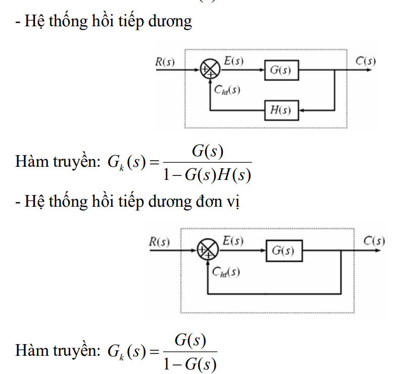
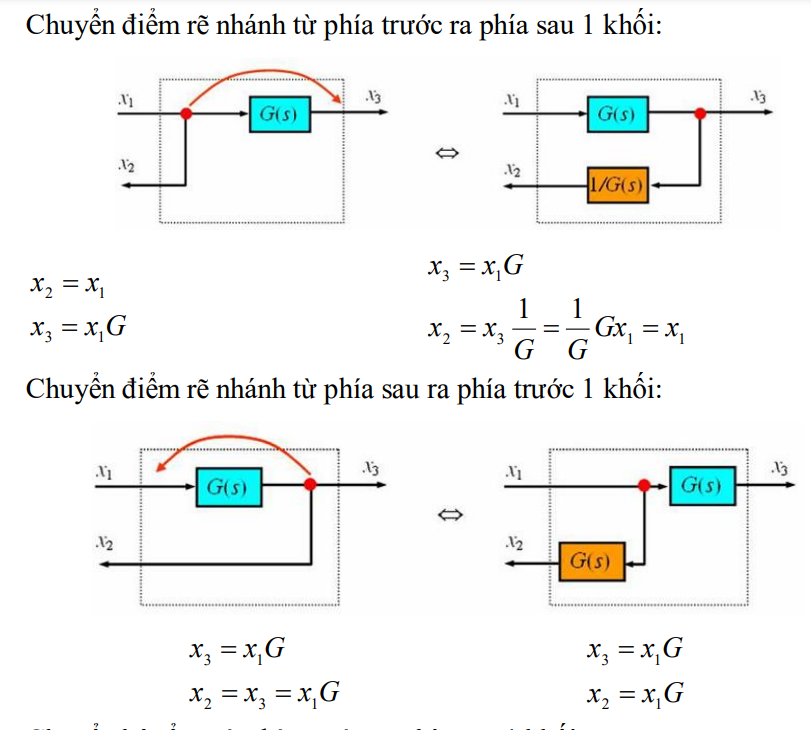
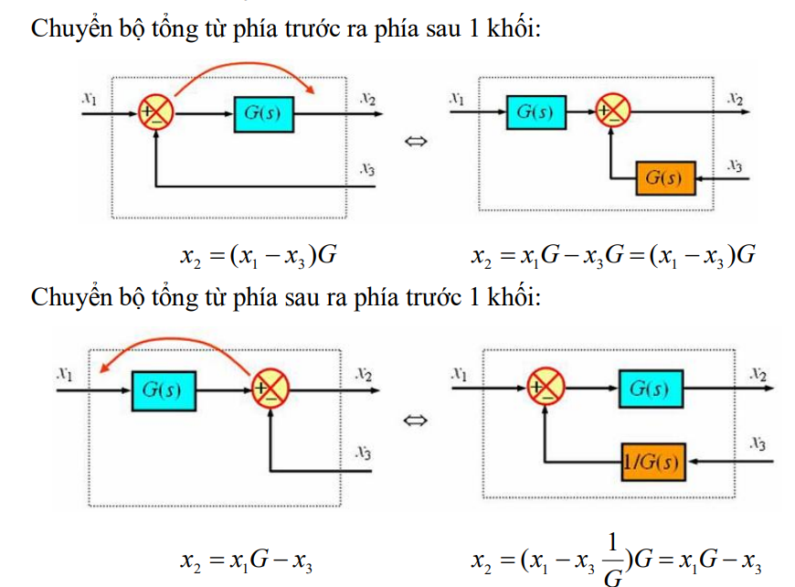
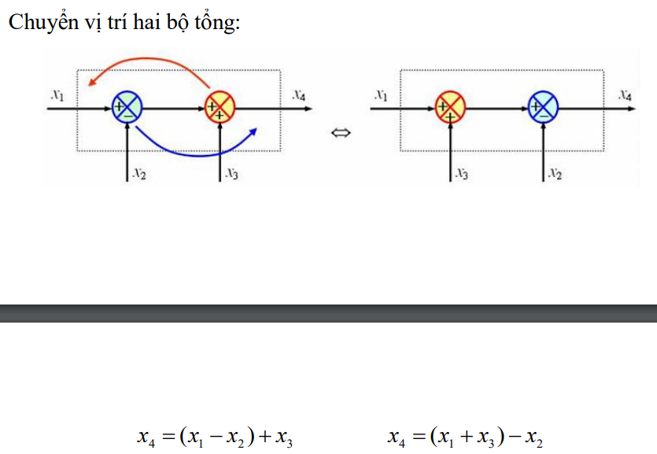
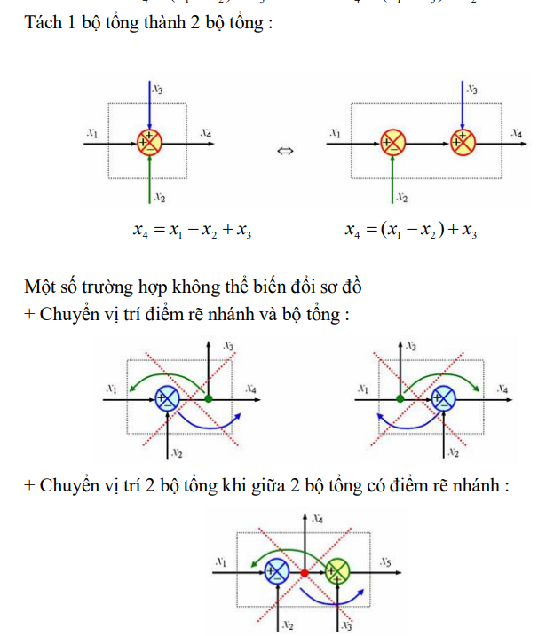

Chương 1: Khái niệm tín hiệu và hệ thống
Định nghĩa tín hiệu và hệ thống
Tín hiệu: là đại lượng vật lý mang thông tin và thay đổi theo thời gian.Tiếng nói, Tín hiệu, vô tuyến Biểu diễn toán học của Tín hiệu
\(s(t)\) với miền xác định\(t_1 \le t \ge t_2\) Hệ thống: là quá trình biến đổi những tín hiệu đầu vào thành những tín hiệu đầu ra.Các đặc trưng của tín hiệu và phân loại tín hiệu
Đặc trưng cơ bản của tín hiệu: - Biên độ (Amplitude): Là độ lớn của tín hiệu tại một thời điểm cụ thể.
- Tần số (Frequency): Là số lần lặp lại của tín hiệu trong một đơn vị thời gian.
- Pha (Phase): Là vị trí tương đối của tín hiệu trong chu kỳ của nó.
- Độ dài (Duration): Là khoảng thời gian mà tín hiệu tồn tại.
- Chu kỳ (Period): Là khoảng thời gian để tín hiệu lặp lại chính nó.
- Năng lượng và Công suất (Energy and Power): Đặc trưng cho mức độ mạnh yếu của tín hiệu qua thời gian.
Phân loại tín hiệu
- Tín hiệu liên tục và rời rạc theo thời gian
- Tín hiệu tương tự và số
- Tín hiệu vô hạn và hữu hạn theo thời gian
- Tín hiệu chẵn và tín hiệu lẻ
- Tín hiệu tuần hoàn và không tuần hoàn theo thời gian
- Tín hiệu công suất và năng lượng
Năng lượng:
\( E = \int_{-\infty}^{\infty}|x(t)|^2dt \) Công suất:
\( P = \lim_{T \rightarrow \infty} \frac{1}{2T} \int_{-T}^{T}|x(t)|^2dt \)
Một số phép tính cơ bản đối với tín hiệu
- Phép dịch thời gian
- Phép đảo
- Phép co giãn thời gian
Các đặc trưng của hệ thống và phân loại hệ thống
Đặc trưng cơ bản của hệ thống: - Tuyến tính (Linearity): Hệ thống là tuyến tính nếu đầu ra là một hàm tuyến tính của đầu vào.
- Bất biến thời gian (Time-Invariance): Hệ thống là bất biến thời gian nếu đặc tính của nó không thay đổi theo thời gian.
- Nhân quả (Causality): Hệ thống là nhân quả nếu đầu ra tại một thời điểm chỉ phụ thuộc vào đầu vào tại thời điểm đó và các thời điểm trước đó.
- Ổn định (Stability): Hệ thống là ổn định nếu đầu ra hữu hạn khi đầu vào hữu hạn.
- Biến đổi Fourier (Fourier Transform): Là công cụ phân tích tín hiệu và hệ thống trong miền tần số.
- Biến đổi Laplace (Laplace Transform): Là công cụ phân tích hệ thống và tín hiệu trong miền phức.
Phân loại hệ thống
- Tuyến tính và phi tuyến
- Bất biến và biến thiên
- Có nhớ và không nhớ
- Nhân quả và phi nhân quả
- Khả nghịch và không khả nghịch
- Ổn định và không ổn định
Biểu diễn cấu trúc ghép nối hệ thống – Sơ đồ khối
Đại số sơ đồ khối
Sơ đồ khối: Sơ đồ khối của một hệ thống là hình vẽ mô tả chức năng của các phần tử và sự tác động qua lại giữa các phần tử trong hệ thống.
Sơ đồ khối có 3 thành phần chính:
Khối chức năng : tín hiệu ra bằng hàm truyền nhân tín hiệu vàoBộ tổng : tín hiệu ra bằng tổng đại số các tín hiệu vàoĐiểm rẽ nhánh : tất cả tín hiệu tại điểm rẽ nhánh đều bằng nhau
Hàm truyền các hệ thống
  
Hàm truyền của hệ thống hồi tiếp nhiều vòng
Đối với các hệ thống phức tạp gồm nhiều vòng hồi tiếp, ta thực hiện các phép biến đổi tương đương sơ đồ khối để làm xuất hiện các dạng ghép nối đơn giản (nối tiếp, song song, hồi tiếp 1 vòng) và tính hàm truyền tương đương theo thứ tự từ trong ra ngoài.
Hai sơ đồ khối được gọi là tương đương nếu hai sơ đồ khối đó có quan hệ giữa các tín hiệu vào và tín hiệu ra như nhau.
Các phép biến đổi tương đương sơ đồ khối
   